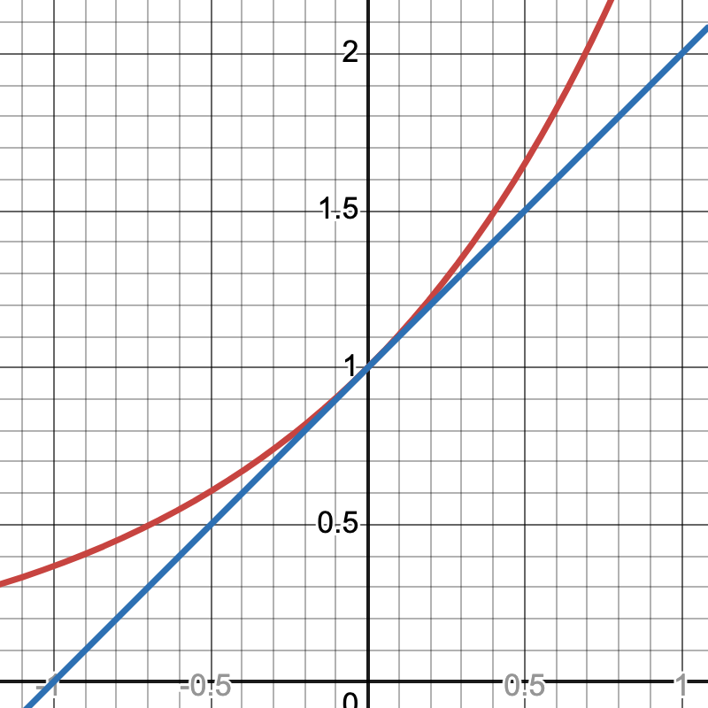

Use the integral test to determine if the following series converge or diverge:
\(\sum\limits_{n=1}^{\infty} \frac{1}{\sqrt{n}}\)
\(\sum\limits_{n=1}^{\infty} \frac{1}{n^{3/2}}\)
\[\sum_{n=2}^{\infty} \frac{1}{4n-5}\]
In general:
\(\sum\limits_{n=1}^{\infty} \frac{1}{n^p}\) is called a p-series.
A p-series converges if \(p>1\)
Diverges if \(p\leq 1\)
Notice: \[\begin{aligned} 1 + \frac{1}{\sqrt{2}} + \frac{1}{\sqrt{3}} + \frac{1}{\sqrt{4}} + \ldots \\ \geq 1 + \frac{1}{2} + \frac{1}{3} + \frac{1}{4} + \ldots \rightarrow \infty \end{aligned}\] Since \(\frac{1}{\sqrt{n}} \geq \frac{1}{n}\) for all \(n\geq 1\)
Definition: An alternating series is one in which the terms alternate between positive and negative.
Example: \(1 - \frac{1}{2} + \frac{1}{3} - \frac{1}{4} + \ldots\) \[= \sum_{n = 0}^{\infty} \frac{(-1)^{n}}{n+1}\]
Examples:
\(1 - \frac{1}{2} + \frac{1}{3} - \frac{1}{4} + \ldots\) converges! \(\rightarrow \ln(2)\)
\(1 - 1 + 1 - 1 +1 \ldots\) diverges
\(1 - \frac{1}{3} + \frac{1}{5} - \frac{1}{7} + \ldots\) converges to \(\frac{\pi}{4}\)
giving us a formula to compute \(\pi\) (This converges quite slowly, though...)
\(a_n = (-1)^n b_n\), or
\(a_n = (-1)^{n+1} b_n\)
where \(b_n \geq 0\), \(\lim\limits_{n \rightarrow \infty} b_n = 0\), and \(b_n\) is decreasing. Then \(\sum\limits_{n=0}^{\infty} a_n\) converges.
In other words:any alternating series where the absolute values of the terms decrease and appraoch 0 converges!
Non-example: Does the series \(1 - \frac{1}{4} + \frac{1}{2} - \frac{1}{16} + \frac{1}{4} - \frac{1}{64} + \frac{1}{8} - \ldots\) converge?
This test is inconclusiv: \(b_n = 1, \frac{1}{4}, \frac{1}{2}, \frac{1}{16}, \ldots\) Not decreasing!
Recall the Commutative law of addition:
\(x + y = y + x\)
\(x_1 + x_2 + x_3 + \ldots + x_n = x_7 + x_{23} + \ldots + x_2\)
Right?
In other words: if you add up a bunch of numbers, you can add them in whatever order you like. We already saw, for example, that the alternating harmonic series converges to \(\ln(2)\):
\(1 - \frac{1}{2} + \frac{1}{3} - \frac{1}{4} + \ldots \rightarrow \ln(2).\)
What happens when we rearrange?
\[\begin{aligned}
&(1 - \frac{1}{2}) - \frac{1}{4} + (\frac{1}{3} - \frac{1}{6}) - \frac{1}{8} + (\frac{1}{5} - \frac{1}{10}) - \ldots \\
&=\frac{1}{2}(1 - \frac{1}{2} + \frac{1}{3} - \frac{1}{4} + \frac{1}{5} - \ldots\end{aligned}\] converges to \(\frac{1}{2} \ln(2)\)!!
Alternating harmonic series converges to \(\ln(2)\)
Rearranging some terms, it converges to \(\frac{1}{2} \ln(2)\)
This is because of conditional convergence!
Definitions:
If a series \(\sum \mid a_n \mid\) converges, we say \(\sum a_n\) converges absolutely.
If not, but \(\sum a_n\) converges, we say it converges conditionally.
It turns out that series that converge conditionally do not respect the commutative law of addition! (This is crazy!)
In fact: if a series converges conditionally, then:
There is a way to rearrange it so that it diverges, and,
for each real number \(r\), there is a way to rearrange the series so that it converges to \(r\).
Suppose \(0 \leq a_n \leq b_n\). Then:
If \(\sum b_n\) converges, then \(\sum a_n\) converges
If \(\sum a_n\) diverges, then \(\sum b_n\) diverges
“If the bigger series converges, so does the smaller series. If the smaller series diverges, so does the bigger series.”
Example 0:\[\sum_{n = 1}^{\infty} \frac{1}{n^2 + 1}\]
Compare with \(\sum\limits_{n = 1}^{\infty} \frac{1}{n^2}\):converges (p-series).
Notice: \(\frac{1}{n^2 + 1} \leq \frac{1}{n^2}\) for all \(n\). Algebra!
The bigger series converges.
So this also converges!
Example 1:\[\sum_{n = 1}^{\infty} \frac{1}{2^n + n^2}\] What should we compare this with?
Example 2: \[1 + \frac{1}{3} + \frac{1}{5} + \ldots\] What should we compare this with?
The ratio test is one of the most important tests for convergence we can use.
Given a series \(\sum a_n\) look at the ratios: \[\lim_{n \rightarrow \infty} |\frac{a_{n+1}}{a_n}| = L\]
\(L < 1\): absolute convergence
\(L>1\): divergence
\(L=1\): inconclusive
Example: \[\sum_{n=0}^{\infty} \frac{1}{n!} = 1 + 1 + \frac{1}{2} + \frac{1}{6} + \ldots\]
\(a_{n+1} = \frac{1}{(n+1)!}\)
\(a_n = \frac{1}{n!}\)
\(\frac{a_{n+1}}{a_n} = \frac{n!}{(n+1)!} = \frac{1}{n+1} \rightarrow 0\)
So this series converges absolutely!
In fact: the series converges to \(e\)
Exercise:Determine if the following series converge:
\(\sum_{n = 0}^{\infty} \frac{3^n}{n!}\)
\(\sum_{n = 0}^{\infty} \frac{3^n}{(-2)^{n+1} \cdot n}\)
\(\sum_{n = 0}^{\infty}\frac{n}{2^n}\)
Polynomial functions are the easiest functions to work with in calculus. They are continuous and differentiable everywhere, we can use the power rule to take derivatives, and the “reverse” power rule to find antiderivatives. These techniques are so powerful that students often mistake all functions for polynomials (perhaps due to a bit of wishful thinking).
It would be nice if we could approximate any function we want using polynomials. Recall that in Calculus I, we found linear approximations to functions using derivatives. Indeed, the tangent line to the graph of a function stays really close to the function itself. Take a look at this graph of \(y=e^x\) and the tangent line at \(x=0\), \(y=x+1\):

Notice that really close to \(x=0\), the graphs almost overlap. That means that the graph of \(y=x+1\) approximates the graph of \(y=e^x\) near \(x=0\). In general, given a graph \(y=f(x)\) the tangent line to the graph at \(x=a\) is the best linear approximation of the function \(y=f(x)\) near \(x=a\): \[y = f(a) + f^\prime(a) (x - a)\] We can similarly find quadratic approximations or cubic approximations to functions. This is the idea behind power series (or more specifically, Taylor series).
Definition: A power series is an infinite sum of polynomials.
For example, we will be studying the following power series:\[p(x) = \sum_{n = 0}^{\infty} x^n\] Notice that when we plug in a number for \(x\), we get an infinite series, and we can determine if converges or not for that value of \(x\) (using the convergence tests we learned recently).
Example: \(p(x)=1 + x + x^2 + \ldots\)
\(p(0)=1\) (converges)
\(p(1)=1+1+1+\ldots\) (diverges)
\(p(-1)=1-1+1-1\ldots\) (also diverges)
\(p(\frac{1}{2})=1+\frac{1}{2}+\frac{1}{4}+\ldots=2\) (converges)
\(p(2)=1+2+4+8\ldots\) (diverges)
More generally: \(p(x)\) converges for all \(x\) such that \(x<1\), and diverges otherwise. This is because it’s a geometric series! In particular, we even know what it converges to: the series \(\sum x^n\) is a geometric series with \(a=1\) and \(r=x\), and so it converges to \(\frac{1}{1-x}\) for all \(x<1\).
The nice thing about power series is that we can use the normal rules for derivatives and integrals of polynomials. For example, since \(p(x) = 1 + x + x^2 + \ldots\) , \[p^\prime(x) = 1 + 2x + 3x^2 + \ldots\]
Symbolically, we can do something very similar using the closed form for the series. Since \(p(x) = \sum\limits_{n=0}^{\infty} x^n\), taking the derivative of each term we get \(p^\prime(x) = \sum\limits_{n=1}^{\infty} nx^{n-1}\). Notice that when we take the derivative, the \(n=0\) term goes away (since the derivative of a constant is 0). We can then re-write \(p^\prime(x) = \sum\limits_{n=1}^{\infty} nx^{n-1}\) as \(\sum\limits_{n=0}^{\infty} (n+1) x^n\), by shifting the value of \(n\) over by one.
Similarly, we can integrate, term-by-term, the series \(p^\prime(x) = 1 + 2x + 3x^2 + \ldots\) and, since \(p(x) = \frac{1}{1 - x}\) when \(|x|<1\), this will be the same as integrating \(\frac{1}{1 - x}\) , at least for those \(x\) in that interval, \[\int \sum_{n=0}^{\infty} x^n dx = C + \sum_{n=0}^{\infty} \frac{x^{n+1}}{n+1}\]
Or: \(\int p(x) dx = C + \sum\limits_{n=1}^{\infty} \frac{x^n}{n}\)
Notice that \(\int \frac{1}{1-x} dx = -\ln|1 - x| + C\), and so for \(|x|<1\), this gives us a power series representation for \(-\ln|1-x|\). In particular, when \(x=0\), \(\ln|1|=0\), we have that \(-\ln|1 - x| = \sum\limits_{n=1}^{\infty} \frac{x^n}{n}\) for all \(|x|<1\).
This series converges for all \(|x|<1\), similar to the series \(1+x+x^2+x^3+\ldots\). What about if \(x=1\) or \(x=-1\)?
If \(x=1\) we get the harmonic series \(\sum \frac{1}{n}\), which we know diverges (using the integral test).
If \(x=-1\) , we get the alternating harmonic series \(\sum \frac{(-1)^n}{n}\), which converges (using the alternating series test). And now we can actually see why \(\sum \frac{(-1)^n}{n}\) converges to \(\ln(2)\): \[\begin{aligned}
-\ln(1 - (-1)) &= \sum_{n=1}^{\infty} \frac{(-1)^n}{n} \\
-\ln(2) &= \sum_{n=1}^{\infty} \frac{(-1)^n}{n} \\
\ln(2) &= -\sum_{n=1}^{\infty} \frac{(-1)^n}{n} \\
\ln(2) &= \sum_{n=1}^{\infty} \frac{(-1)^{n+1}}{n}\end{aligned}\] And so the series \(1 - \frac{1}{2} + \frac{1}{3} - \frac{1}{4} + \ldots\) converges to \(\ln(2)\).
We have studied the functions \(f(x) = \frac{1}{1-x}\) and its “power series representation” \(p(x) = \sum\limits_{n=0}^{\infty} x^n\). We notice that \(p(x)\) converges for \(|x|<1\).
Specifically, we have looked at power series centered around \(x=0\). A power series centered at \(x=0\) looks like a function of the form \[f(x) = \sum_{n=0}^{\infty} a_n x^n\] where \(a_n\) is an infinite sequence. Since \(f(x) = a_0 + a_1 x + a_2 x^2 + \ldots\), if we plug \(x=0\), we get \(f(0)=a_0\), and so \(f(0)\) converges! What if \(x \neq 0\)? There are three possibilities:
\(f(x)\) might converge for all \(x\)
\(f(x)\) might diverge for all \(x\neq 0\)
there is some real number \(R\) such that if \(-R<x<R\), then \(f(x)\) converges
That third point can be stated as "\(f(x)\) converges in some interval of radius \(R\) centered around \(0\).” If \(x=R\) or \(x=-R\), \(f(x)\) may or may not converge (more specific analysis might be needed for that).
More generally, we could study series centered at any \(x\)-value. A series centered at \(x=5\) might look like \[p(x) = \sum_{n=0}^{\infty} a_n (x - 5)^n\] Or even more generally, a power series centered at \(x=x_0\) would look like\[p(x) = \sum_{n=0}^{\infty} a_n (x - x_0)^n\] Notice that \(p(x) = a_0 + a_1 (x - x_0) + a_2 (x-x_0)^2 + \ldots\), and so \(p(x_0) = a_0 + 0 + 0 + \ldots\)
Therefore \(p(x_0)\) converges! Similarly, there are three possibilities for whether \(p(x)\) converges for \(x\neq 0\):
\(p(x)\) might converge for all \(x\)
\(P(x)\) might diverge for all \(x\neq 0\)
there is some real number \(R\) such that if \(-R<x-x_0<R\), then \(p(x)\) converges
This \(R\) is referred to as the radius of convergence of the power series around \(x=x_0\). In case (1), we say that the radius of convergence is \(\infty\), and in case (2), the radius of convergence is \(0\).
How do we find the radius of convergence? We use the ratio test. For example, let’s look at the power series \(\sum \frac{x^n}{n}\). Applying the ratio test to the terms of this series, we get:
\(a_{n+1} = \frac{x^{n+1}}{n + 1}\)
\(a_{n} = \frac{x^{n}}{n}\)
Dividing, we get \(\frac{x^{n+1}}{n + 1} \cdot \frac{n}{x^n} = x \cdot \frac{n}{n+1}\). Now we look at the limit as \(n \rightarrow \infty\) of \(|x \cdot \frac{n}{n+1} |\), which is just \(|x|\). Since the ratio test says that the series converges absolutely if \(L<1\), we see that we must have \(|x|<1\). Therefore our radius of convergence is 1.
Example: \(\frac{x^n}{n!}\)
Lastly we look at the series \(f(x) = \sum\limits_{n=0}^{\infty} \frac{x^n}{n!}\). This is the series \(1 + x + \frac{x^2}{2} + \frac{x^3}{6} + \frac{x^4}{24} + \ldots\).
Notice two things about this series:
\(1 + 0 + 0 + \ldots = 1\)
\(f^\prime(x) = 1 + \frac{2x}{2} + \frac{3x}{6} + \frac{4x}{24} + \ldots\) and is we simplify these fractions, we’ll see:
\(f^\prime (x)=f(x)\)
In particular, \(f(x)\) is a solution to an initial value problem:
\(y^\prime=y\)
\(y(0)=1\)
If we try to solve this using our methods of solving differential equations, we would get \(y=e^x\). This means, if the power series \(f(x)\) converges, it must converge to \(e^x\)! So let’s see where it actually converges by finding the radius of convergence.
Since \(a_{n+1} = \frac{x^{n+1}}{(n+1)!}\) and \(a_n = \frac{x^n}{(n)!}\), we can compute the ratio: \[|\frac{a_{n+1}}{a_n}| = |\frac{x^{n+1}}{(n+1)!} \cdot \frac{n!}{x^n}|\] Simplifying, we get: \[\frac{|x|}{n+1}\] As \(n \rightarrow \infty\) the expression approaches 0 no matter what \(x\) is.Therefore this power series converges absolutely for every \(x\). In particular, we see that \(f(x)=e^x\) for all \(x\).
Take a look at this animation on Desmos, which shows that as we take more and more terms of this infinite sum, we get a polynomial that approximates the graph of \(e^x\) really well: